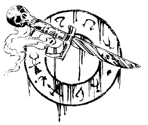

Le roc grince, et de la poussière s'élève, alors que le mur commence à bouger. Une fissure apparaît dans la maçonnerie et, lentement, une porte secrète s'ouvre. Vous êtes stupéfait de la voir s'ouvrir sur l'un des côtés de la cavité que vous aviez remarquée. Quelques instants plus tard, il vous est possible de voir ce qui se trouve de l'autre côté de la porte. La pièce secrète est petite, et une table, sur laquelle est posée un coffret, se trouve en son milieu. Si vous désirez y pénétrer, rendez-vous à cet endroit. Mais si vous préférez ne pas y prêter attention, vous pouvez gravir l'escalier, et ouvrir la porte qui se trouve à son sommet. 